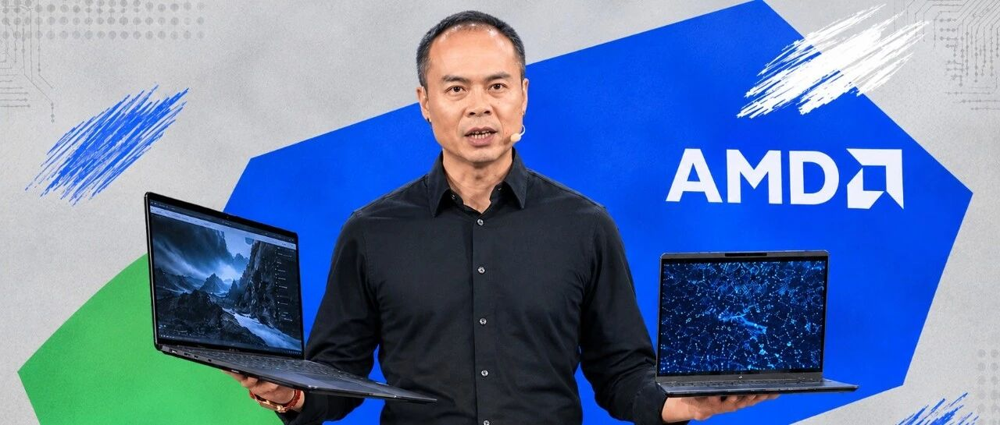

AMD pursues universal “Token Freedom”?
At IFA 2026, AMD unveiled Gorgon Halo and a personal AI strategy, extending unified memory to 192GB for on-device 300-billion-parameter models. With Microsoft, Lenovo, and HP, a laptop-to-workstation personal AI portfolio is being assembled — a bid to open a local-computing flank against cloud AI.
This article reports AMD’s IFA 2026 launches and strategic framing. Jack Huynh, senior vice president, formally advanced “personal AI,” defined by local computing, privacy and control, and personal context. Launches include Gorgon Halo (192GB unified memory; local 300-billion-parameter models), the Lenovo ThinkCentre X desktop, the HP ZBook notebook, and Halo Station, a trillion-parameter workstation pairing a 96-core Threadripper PRO with MI350P accelerators. The economics are analyzed: at 15 million daily output tokens, cloud approaches €100,000 annually, whereas local deployment yields “token freedom” after a one-time outlay. Open-model benchmarks (Laguna S 2.1, GLM 5.3 Flash) are cited showing local performance ahead of commercial cloud models. Microsoft, in parallel, introduced Project Zenith, a turnkey Windows development environment. AMD’s 46.2% data center CPU share and Counterpoint’s 59% high-end AI PC penetration forecast supply the competitive context.

“The AI PC is the infrastructure of personal computing — not an alternative to cloud AI.”
In January, Lisa Su’s CES remarks committed AMD to AI personal computing; the solution then was the 128GB Ryzen AI Halo.
Eight months on, AMD raised the bar on personal-computing infrastructure, unveiling Gorgon Halo. Unified memory has been increased from 128GB to 192GB, enabling local deployment of 300-billion-parameter models.
The upgrade is aimed directly at Nvidia, whose personal-AI DGX Spark is limited to 128GB of unified memory and local models of up to 200 billion parameters.
In his early-September IFA keynote, Jack Huynh, AMD senior vice president and general manager of Computing and Graphics, extended Lisa Su’s thesis: AI is entering the “personal AI” era, in which intelligence resides not only in cloud data centers but in the desktop at hand, the laptop in a backpack, and the trillion-parameter workstation on a desk.
If data center GPUs remain Nvidia’s home turf, AMD has taken half of the server CPU market: EPYC booked a 46.2% revenue share in Q1.
On this backdrop, local-computing-focused personal AI becomes the next gold rush for upstream chip vendors — hence Lisa Su’s repeated line that “we are only in the third inning.” Active AI users, she forecasts, will rise from 1 billion to 5 billion by 2030.
Counterpoint’s data also frames the personal AI chip war: high-end AI PC penetration of worldwide shipments is projected at roughly 59% in 2026, a sharp jump from 39% in 2025.
This year is accordingly defined by Counterpoint as the “crossover year” — the point at which hardware catches up with software. [IMAGE:2]
Evolution of token processing volumes
In the keynote, Jack Huynh structured “personal AI” into local computing, privacy and control, and “personal context,” quantifying user forecasts at the token level.
“Monthly volumes have risen from roughly 0.7 quadrillion tokens to 1.7 quadrillion, with 120 quadrillion projected by 2030. At 15 million daily output tokens, pure cloud costs run to about €300 per day — nearly €100,000 per year.”
In short, moving a portion of compute back on-device converts “smart computing” into “cheaper computing.”
To that end, AMD convened a “personal AI” alliance, branching Gorgon Halo into the Lenovo ThinkCentre X, the HP ZBook, and the more powerful Threadripper Halo Station. [IMAGE:3]
HP ZBook, codename “Sunday”
Making “personal AI” credible — transferring subscription-only cloud workloads to local machines — requires more than hardware. It also depends on model evolution.
“AI is becoming smaller, faster, and more capable,” said Jack Huynh; such efficiency gains, he noted, accrue directly to the PC. Local, he stressed, does not mean inferior.
On software-engineering benchmarks, open-source Laguna S 2.1 on Strix Halo outscored cloud-based Claude Sonnet 5; locally run GLM 5.3 Flash on Gorgon Halo likewise surpassed Claude Fable 5, the cloud leader.
Economically, 10 million output tokens on Sonnet 5 cost roughly €90; the same volume in high-usage mode on Gorgon Halo is metered at about €500. Local, however, carries no per-token charge: after hardware is paid for, “token freedom” is effectively permanent.
Beyond OEM booths such as Lenovo’s, Microsoft has supplied software-side support.
In a joint on-stage appearance, Pavan Davuluri, Microsoft’s corporate vice president for Windows and Devices, noted:
Agents move from “understanding intent” to “acting across applications, files, and services,” a shift premised on trust, security, and user control.
Davuluri also announced Project Zenith, a turnkey Windows programming environment bundling VS Code, WSL, GitHub Copilot CLI, and PowerShell — with explicit out-of-the-box support for AMD Ryzen AI Halo — enabling developers to run large models and complex AI workflows locally.
The fullest expression of pushing compute to the individual, however, is the Threadripper Halo Station workstation.
Threadripper Halo Station pairs a 96-core Threadripper PRO with two Instinct MI350P accelerators (expandable to four), up to 2TB of system memory, and up to 576GB of HBM3E — liquid-cooled throughout — for on-device trillion-parameter models. [IMAGE:4]
Threadripper Halo Station, on-site
From Gorgon Halo AI PCs to the Threadripper Halo Station, the “token freedom” AMD seeks for personal AI is, in effect, a graduated choice offered to users.
Because models, tools, and infrastructure will all evolve, developers retain “freedom of choice”: local when workloads warrant it, data center when they do not.
“Every great computing era endowed people with abilities they previously lacked. AI now confers a wholly new one,” said Jack Huynh.
What follows is an edited transcript of Jack Huynh’s keynote (abridged without altering the original meaning).
Good morning, IFA.
For decades, computers have been made faster, smaller, and stronger — placed on desks and in pockets. Intelligence is now being woven into everything, giving machines an understanding of what we do, what we seek, and what matters most, and finally the capacity to work with us. This will change everything.
At AMD, we build the compute behind these possibilities — from the smallest device to the largest supercomputers. The industry’s hardest problems have been tackled under a simple conviction: technology matters most when it places real power in people’s hands. Today I will show what happens when that power becomes personal.
From the edge of space to the operating room to the planet’s future, AMD technology is the power behind it all. Computing alters not merely what machines can do, but what people can do.
AI is the electricity of a new age. As electricity was absorbed into daily life, intelligence will be absorbed into everyday tools. AI now reaches into every domain — discovering drugs, rendering the invisible visible, converting ideas into reality.
Every generation bequeaths stronger tools to the next. The PC placed computing before millions; the internet made global knowledge accessible; the smartphone put computing in the pocket. AI now imbues computing with intelligence. The question is no longer what computers can do, but what we can do with them.
AI is advancing at a speed with few historical parallels. It learned to converse, then, within a year, to see; reasoning followed, and 2025 brought the agentic stage — systems that act, not merely answer: planning, using tools, self-checking, executing continuously. One agent extends one person; parallel agents compound the effect.
That leverage carries a price. Each productivity multiplier brings a corresponding multiplier in compute demand. Token consumption, fueled by agentic AI, is growing at an unprecedented pace. A routine ChatGPT exchange draws hundreds to thousands of tokens; an autonomous agent planning a trip may draw hundreds of thousands to millions — continuously, day and night.
Standard models in daily use advanced from roughly 0.7 quadrillion tokens per month to 1.7 quadrillion — before agents. By 2030, 120 quadrillion monthly is projected. The gap is vast; more compute is required, and its location must be reconsidered.
Ninety-three percent of enterprises have exceeded AI budgets; agents will raise demand further. More spending is not the answer — smarter computing is. At 15 million daily output tokens, cloud costs reach roughly €300 per day, nearly €100,000 per year. Meanwhile, smaller and stronger chips have pushed personal devices into capability ranges once exclusive to data centers. Next-generation computing will be defined by intelligence closer to the user: more personal, more efficient, more capable.
The personal AI era has arrived. Personal AI understands context, sits close to one’s data, and extends imagination and accomplishment. It rests on three pillars: local computing, privacy and control, and personal context.
Local computing first. OpenAI’s GPT-OSS — a 120-billion-parameter open-weights model scoring 80 on GPQA, released last August — was surpassed months later by the 9-billion-parameter Qwen 3.5 on the same benchmark: 13 times fewer parameters, better results. AI is becoming smaller, faster, and stronger. Strix Halo, with 128GB of unified memory, runs up to 200 billion parameters locally; Gorgon Halo, at 192GB, lifts the ceiling to 300 billion. Cloud-subscription workloads now execute directly on-device.
Local is not inferior. On software-engineering benchmarks, Laguna S 2.1 on Strix Halo outperformed cloud-hosted Claude Sonnet 5; locally run GLM 5.3 Flash on Gorgon Halo surpassed cloud Claude Fable 5. Economics: Sonnet 5 costs roughly €90 per 10 million output tokens; a high-usage Gorgon Halo scenario, about €500 — yet local billing is token-free, whether used once or a thousand times. On Strix Halo, ten AI agents operate locally in parallel, making the notebook a collaborating team.
Behind me stands the Gorgon Halo Box — a developer-focused entry into a new local AI category, launching in Europe shortly. OEM partners share the enthusiasm.
In Berlin yesterday, Lenovo introduced the Gorgon Halo-based ThinkCentre X, a desktop-scale system running 300-billion-parameter models locally. A laptop was also built on Gorgon Halo for the first time — codenamed Sunday, years in development — the new HP ZBook, with 190GB of unified memory. An entire 3D world can now be generated locally from one instruction; flight simulation runs fluidly. Personal AI, in hand.
Models and devices are ready; frontier capability is no longer remote. Personal AI, however, must earn trust — hence privacy and control. Personal AI touches what is most valuable: files, conversations, preferences. The closer intelligence comes, the greater the need to protect it. Sensitive work remains on-device, under user control; context travels with chosen devices and is shared only by choice. Most AI today originates in the cloud — imagine it originating with you: the PC processes locally what it can and connects to the cloud when scale demands, the locus of execution decided by the PC.
The last pillar is personal context. The most powerful AI understands the world better — and the user better. Applications, models, and compute constitute the stack; personal AI adds a context layer: who you are, what matters, what you are striving to build. Without context, AI returns an answer; with context, the answer is yours. Two people ask to be “prepared for tomorrow”: for one, a client meeting and three decisions; for the other, an exam. Same question, wholly different requirements.
AMD and Microsoft have collaborated for nearly two decades, advancing Strix Halo and Gorgon Halo across CPU, GPU, AI, per-watt performance, and security — with delivery sustained by AMD. Project Zenith, Microsoft’s turnkey Windows programming experience, will support AMD Ryzen AI Halo out of the box, configured with at least 64GB of memory, for local large-model and complex AI workflows. First availability is planned on the Gorgon Halo Box.
Work once reserved for the cloud now executes locally on the PC. The PC is evolving from a reactive tool into an entity that understands the user and completes tasks — a transition requiring coordination across silicon, software, OS, and applications.
We have seen how AI changes the PC. But what occurs when a single system assumes whatever form work demands — when a PC need not be merely a PC, when a system gives developers exceptional compute and becomes shared AI infrastructure as teams require, when data-center-class capability is brought to the user? It has been designed, and built.
A wholly new category is unveiled today: the Threadripper Halo Station, the world’s most powerful workstation, engineered for AI models exceeding a trillion parameters. Specified with a 96-core Threadripper PRO, two Instinct MI350P accelerators (expandable to four), up to 2TB of system memory, and up to 576GB of HBM3E — liquid-cooled throughout — it is, in substance, a personal supercomputer.
Personal AI was the starting point: Gorgon Halo delivered exceptional compute to the desktop; supercomputing-class compute followed to the workstation. The task now is to make that compute open, accessible, and world-ready — a matter of software and ecosystem.
How is personalization across PCs and workstations to be extended? The workstation is not the destination but the point of departure. The genuine transition: an idea starts on a single Ryzen AI Halo, enters a secure, supported production environment, and scales into enterprise infrastructure as demand dictates. Scale need not mean surrendering choice — models, tools, and infrastructure evolve, and control should remain with developers and enterprises. AMD shares that open disposition; openness, not narrowed choice, is our intent.
The larger opportunity lies in hundreds or thousands of AI systems — workstations, servers, data centers, edge — operating in concert, not isolation. Scaling from one system to many, with openness preserved, permits seamless collaboration across all compute. An idea born of one person and one workstation matures into a solution on which an entire organization relies.
Each great computing era conferred capabilities previously unknown. The PC brought computing within reach; the internet networked global knowledge; the smartphone made it portable. AI now bestows a new capability: the conversion of imagination into action.
AI understands the user, collaborates, and extends what is possible — imagination is not replaced but amplified. The decisive question is not what AI can do, but what will be done with it. The greatest breakthroughs remain unimagined; the next great company, unfounded. Perhaps it is in this room; perhaps it is you. Imagine what does not exist, then build it. At the presumed limit, imagine further and dream larger. The best future has yet to be imagined.